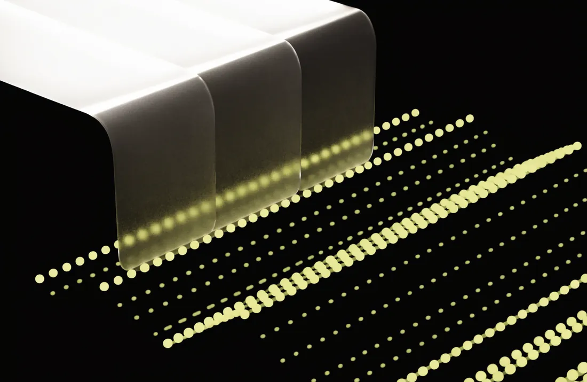
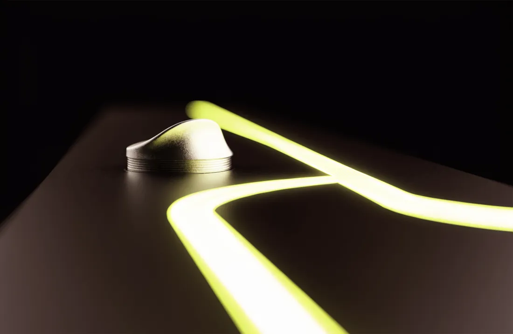

Portfolio / Vol. 03
Istanbul, Türkiye · 41.01° N, 28.97° E
Erva— computer engineer Şengül
I engineer things that think, see & adapt — AI for healthcare, Kubernetes that stops wasting money, and vision systems that run in real time.
B.S. Computer Engineering · Class of 2026
Selected Work(06)
2024 — 2026
My graduation project: a Go-based Kubernetes resource optimizer that right-sizes CPU and memory requests to cut cloud waste without risking workload stability. A statistical engine analyzes historical usage from Prometheus; a four-layer safety framework validates every change before it lands — designed after studying where VPA, KEDA, Goldilocks, Polaris and Karpenter fall short.
An AI pipeline that turns messy, multilingual clinical documents into clean, structured data for medical-tourism pre-evaluation. I fine-tuned MedGemma-4B with QLoRA to extract clinical information into structured JSON, paired NLLB-200 for translation, and assembled the output into a chronological clinical timeline for clinicians.

A hybrid system that flags billing anomalies and SUT rule violations in healthcare transactions. A machine-learning model learns normal billing patterns while a deterministic rule engine encodes regulatory rules — catching both statistical outliers and explicit policy breaches, and cutting manual review effort.

A TEKNOFEST 2025 project that detects and classifies seven facial expressions in real time from a live webcam feed. A CNN trained on facial-expression datasets, an OpenCV pipeline for multi-person face tracking, and an interactive timed game with scoring and leaderboards — running smoothly on standard hardware at the festival stand.

Reconstructing and forecasting weather trends from NOAA meteorological data. I implemented and compared linear, polynomial and cubic-spline interpolation, alongside time-series decomposition with Fourier analysis and autocorrelation to separate trend, seasonal and residual components.

An embedded system on a PIC16F877A that monitors car battery voltage in real time and reports a health status (GOOD / OK / LOW / CRITICAL) on an LCD. I designed a voltage-divider circuit to safely scale the 8–15 V battery range to the ADC's 0–5 V input and wrote the firmware in embedded C.

Archive(11)
Coursework · Systems · Experiments
- ck_dataset_project CK+ facial-expression dataset experiments Python
- CSMA_CD Medium-access protocol simulation Python
- ASP.NET-core-MVC-example Example web application, ASP.NET Core MVC C#
- CustomCommandLine-in-C Shell with command execution & process management C
- Matter-of-life-and-death Josephus-problem simulation on process creation C
- Dictionary-Merging-in-C Dictionary merging via binary search trees C
- Turkish-to-English-Dictionary Menu-driven dictionary management utility C
- Circular-Matrix-in-C 2D matrix generation with circular row shifting C
- XOXO-game-in-C Tic-tac-toe variant with win detection C
- Paint-Calculator-in-JAVA Shape-based paint cost calculation with inheritance Java
- DB-PROJECT Web front end for a database course project HTML
About
Erva Şengül · Istanbul
The iPhone wasn't the first smartphone. Kubernetes wasn't the first orchestrator. They were just done better — and that's the work I'm interested in.
I'm a Computer Engineering student at Istanbul Medipol University (B.S., English), graduating June 2026 and heading toward a US master's at the intersection of AI and business.
My world revolves around three things: AI applied to healthcare, cloud infrastructure and Kubernetes, and computer vision. I've fine-tuned large language models to turn messy multilingual clinical documents into structured data, built a Go-based Kubernetes optimizer that cuts cloud waste safely, and trained neural networks that recognize facial expressions in real time.
What I'm after isn't building something first — it's building something that actually makes sense. Finding the pain points everyone accepts as normal, and refusing to.
AI / ML
- LLM Fine-Tuning · QLoRA
- Deep Learning · CNNs
- NLP · Computer Vision
- TensorFlow · PyTorch
- OpenCV · Scikit-learn
Cloud / Systems
- Kubernetes · GKE
- Go · Custom Operators
- Docker · Prometheus
- Linux Administration
- Embedded C · PIC · ESP32
Software
- Python · Go · C# · C
- SQL · JavaScript
- ASP.NET Core · Django
- MySQL · SQL Server
- Git · GitHub
- EducationB.S. Computer Engineering — Istanbul Medipol University, 2026
- Based inIstanbul, Türkiye
- Currently readingThe Phoenix Project — Kim, Behr & Spafford
- RésuméGeneral (PDF) · AI & ML (PDF)
Experience
2024 — Present
- Aug — Oct 2025 Software Engineer InternMedipol Healthcare Group AI and data solutions for healthcare workflows — ML-based billing anomaly detection and clinical document processing inside a hospital group's technology team.
- 2025 CompetitorTEKNOFEST 2025 Real-time facial emotion recognition system, presented live as an interactive game at Turkey's national aerospace & technology festival.
- Mar — May 2025 Engineering ProgramTEI — TUSAŞ Engine Industries Selected for a competitive engineering program at one of Turkey's leading aerospace organizations.
- Sep — Oct 2024 Software Engineer InternConovel IT Full-stack contributions to web and software development projects within a professional team.
Have an idea worth doing better?